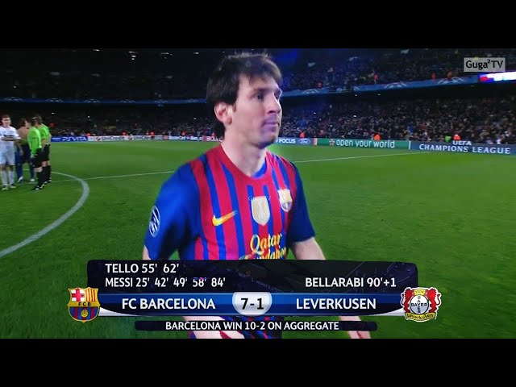
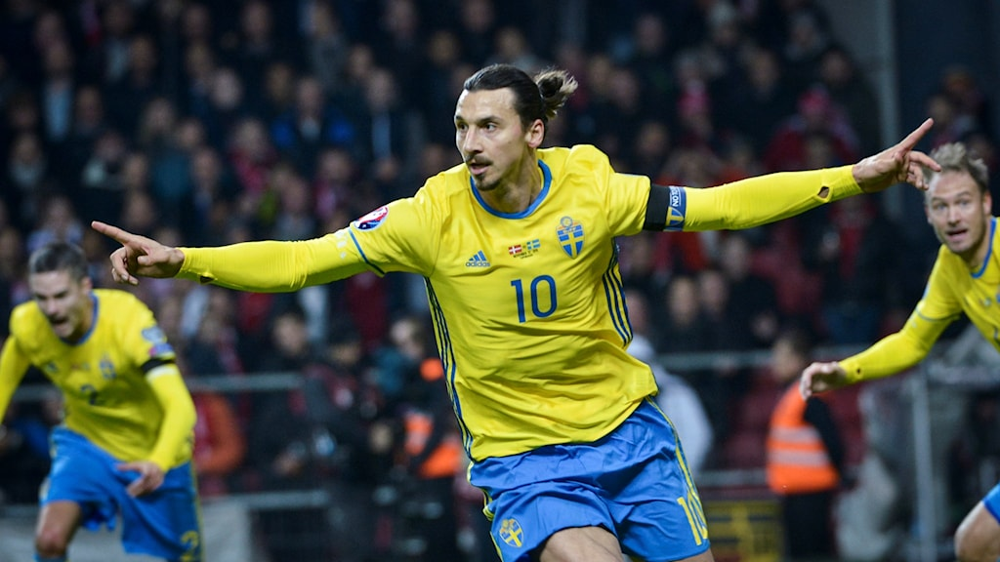

Sergio Ramos blev utvisad – för 28:e gången i karriären

Ett rött kort är för de flesta fotbollsspelare en sällsynt syn. Det gäller inte Sergio Ramos. När Paris Saint Germain kryssade mot Reims på lördagskvällen fick han sitt 28:e röda kort i karriären. Det är näst flest i historien.
Läs mer
Messi historisk femmålsskytt - när Barcelona vann med 7-1

Barcelona krossade Leverkusen fullständigt och vann med 7-1. Leo Messi blev historisk som förste spelare att göra fem mål i en och samma match i Champions League.
Läs mer
Zlatan sköt Sverige till EM

Vägen dit blev längre och krångligare än vad många hade förväntat sig. Men när det gällde som mest presterade Sverige som bäst. Efter Zlatan Ibrahimovics två mål och 2–2 mot Danmark på Parken är Blågult klart för EM i Frankrike nästa sommar.
Läs mer
Lille Ligue 1-mästare - första ligatiteln på tio år
Lille vann, PSG vann - och därmed slutade toppen i Ligue 1 som den var inför den sista omgången, det vill säga med Lille i topp, en poäng före PSG.
Läs mer